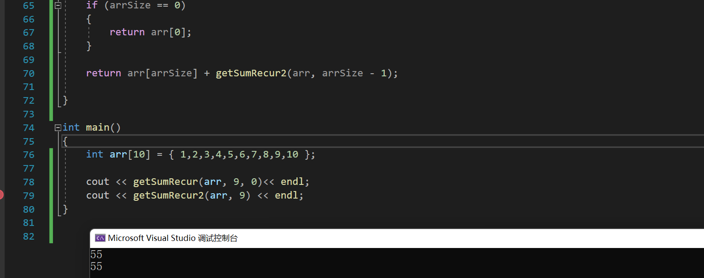

深入理解递归系列(2)
深入理解递归2
回忆一下，递归的本质就是函数的调用，而且特别的，是调用他自己，为了防止根本停不下来的调用，我们必须提供一个函数的递归出口——这正是我们之前所阐述的！
#include<string>
#include<iostream>
using namespace std;
// 如果你忘记了的话，看看这个复习一下吧！
void printRecur(const int* array, unsigned int start, unsigned int end)
{
if (array == NULL) {
return;
}
if (start >= end)
{
return;
}
cout << array[start] << " ";
printRecur(array, start + 1, end);
}
int main()
{
int arr[10] = { 1,2,3,4,5,6,7,8,9,10 };
printRecur(arr, 0, 10);
} 下面继续哔哔新东西！
我们刚刚一直在说系统栈，可不可以书写一个函数来实现我们的系统栈功能呢？可以的：
改造上面的代码为如下，详细的解说请参看代码的注释！
void imitateSysRecur(const int* array, unsigned int start, unsigned int end)
{
cout << '\n';
stack<int>* sys = new stack<int>();// 创造一个空栈
sys->push(array[start]);// 这里等效做函数的第一次调用
while (!sys->empty())// 查看有没有弹出干净，没有继续弹出！
{
int prt = sys->top();// 一下就弹出第一个任务
if (start >= end)
return;
printf("%d ", prt); // 对之执行操作
sys->push(array[++start]);// 转向下一个
}
}
int main()
{
int arr[10] = { 1,2,3,4,5,6,7,8,9,10 };
imitateSysRecur(arr, 0, 10);
}虽说递归爽，但是注意到性能问题！
递归也有代价：写的爽必然有代价。
首先函数调用就有时间的开销（注意到递归反复调用函数）
其次，这也存在空间上的开销！我们需要占一定的空间复杂度来运行我们的函数。
那么，什么时候使用递归呢？预告一下：正是那些非线性的数据结构我们使用递归来处理，这将会在树与图论中显的常见！
练习1：递归求解线性表：如数组的和
首先，我们来看，对于一个线性表，我们若是想得知这些元素的和：
然而马上发现，这个表达式可以写作：
啊哈！这递归就出来了：终止条件就是当取到 arr[0]时停止！，这样就可以开始设计递归了。
我们的结果可以存放在函数的参数列表里，这样的话递归不用开辟新的空间存放局部变量！
long getSumRecur(const int* arr, unsigned int arrSize,int curSum)// 设计1
{
if (arr == nullptr) // 不合法的数组return
{
return -1;// 这个地方放错误处理，可以是cstdlib下的exit!
}
if (arrSize == -1) // 即将越界
{
return curSum; // 求和结束，直接返回当下参数的curSum就好了
}
getSumRecur(arr, arrSize - 1, curSum + arr[arrSize]);
// 递归！ 让arrSize减1， 表明arr[size-1]已经纳入和 curSum 了！
// 同时，在参数列表中做出 curSum + arr[arrSize]的修改就好了
}
这样的递归适合与有前缀初始值的求和！
有没有别的形式的？有。直接注意到：没有必要新增一个参数，而是直接return掉局部和！就是说：
return arr[size] + getCur2(arr,size-1) 因为为了返回，必须要把getCur2的值求出来，一直递归到函数不需要调用自己为止！那就很是容易了，只要curSize == 0,返回 arr[curSize]就好了！（其实就是arr[0]）
long getSumRecur2(const int* arr,int arrSize)
{
if (arr == nullptr) {
return -1;
}
if (arrSize == 0)
{
return arr[0];
}
return arr[arrSize] + getSumRecur2(arr, arrSize - 1);
} run 一下代码！
int main()
{
int arr[10] = { 1,2,3,4,5,6,7,8,9,10 };
cout << getSumRecur(arr, 9, 0)<< endl;
cout << getSumRecur2(arr, 9) << endl;
}
全体目光向我看齐，我宣布个事！是我Charliechen写的这篇文章！(?)